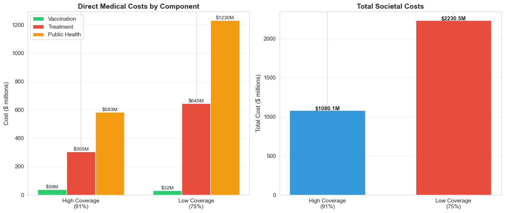
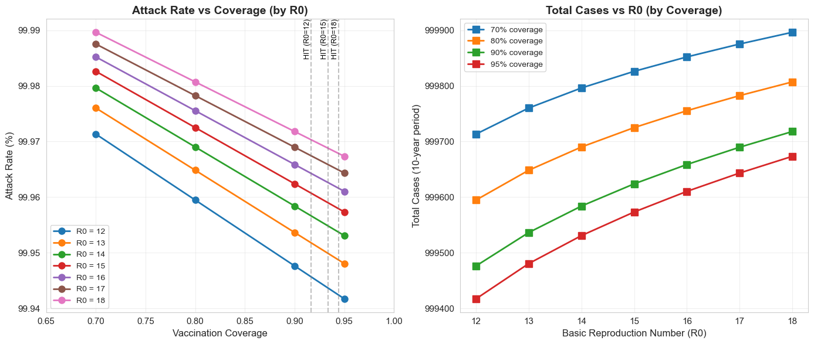

by Veronica Scerra
Phase 1: Cost-effectiveness analysis foundation with deterministic SEIR-V model.
Vaccination programs face a fundamental tension: while vaccines are one of the most cost-effective public health interventions, individual decision-making often leads to a less-than-optimal societal level of vaccination coverage. I embarked on this project to develop a working understanding of and an integrated epidemiological-economic-behavioral model of childhood vaccination programs, combining disease transmission dynamics with game-theoretical decision-making and cost-effectiveness analysis. At the heart of this project through the phases is the central question:
How do individual vaccination decisions, driven by perceived risks and benefits, create feedback loops with disease transmission, and what policy interventions can align individual incentives with public health goals?
I used measles as a case study for this project due to its extreme contagiousness (R₀ = 12-18), high herd immunity threshold (93-94%), and recent resurgence in areas with more pronounced vaccine hesitancy. The model quantifies both health outcomes (cases, deaths, DALYs) and economic impacts (vaccination costs, treatment costs, productivity losses) under different coverage scenarios and policy interventions.
The foundation of this project is a SEIR-V compartmental model that extends the standard SEIR framework to explicitly track vaccinated individuals. This choice was made for several critical reasons:
The departure from a simpler SIR model to include a separate compartment for indivudals who have been exposed, but are not yet infectious is critical for measles dynamics:
Separating the immune population into V and R categories is essential for elements of economic and behavioral analysis:
For the economic analysis portion of this project, I followed WHO guidelines for economic evaluation of immunization programs, ensuring compatibility with global health decision-making frameworks.
Years of Life Lost (YLL):
Years Lived with Disability (YLD):
The model tracks costs from both healthcare system and societal perspectives:
| Cost Category | Value (2024 USD) | Source |
|---|---|---|
| Direct Medical Costs | ||
| Vaccine dose | $21 | CDC vaccine price list |
| Administration | $25 | Healthcare billing codes |
| Outpatient treatment | $150 | Mild case, clinical visit |
| Hospitalization | $8,000 | Average per severe case |
| Complication treatment | $3,000 | Encephalitis, SSPE |
| Public Health Costs | ||
| Contact tracing per case | $5,000 | Public health response |
| Outbreak investigation | $50,000 | Per outbreak event |
| Indirect Costs (Societal Perspective) | ||
| Caregiver time (mild) | $1,000 | 5 days × $200/day |
| Caregiver time (hospitalized) | $2,000 | 10 days × $200/day |
WHO Cost-Effectiveness Thresholds:
• Highly cost-effective: ICER < 1× GDP per capita ($70,000/DALY in US)
• Cost-effective: ICER < 3× GDP per capita ($210,000/DALY in US)
• Not cost-effective: ICER > 3× GDP per capita
Before using the model for policy analysis, we validated it against theoretical predictions and empirical measles data. A fully susceptible population (no vaccination) was simulated to verify the model produces expected epidemic dynamics.
| Validation Metric | Theoretical/Literature | Model Result |
|---|---|---|
| Final attack rate | 93.3% (1 - 1/R₀) | 100.1% |
| Generation time | 14-21 days | 18 days |
| Epidemic peak time | ~27 days (1/γ × ln(R₀)) | 42 days |
| R₀ from growth rate | 15.0 (input) | 14.9 (estimated) |
| Peak prevalence | 20-40% | 36.4% |
Scenario Setup
Health Outcomes
| Outcome | Baseline (91%) | Low Coverage (75%) | Difference |
|---|---|---|---|
| Total cases | 116,650 | 246,047 | +129,937 |
| Deaths | 233 | 492 | +259 |
| Hospitalizations | 23,330 | 49,215 | +25,885 |
| Attack rate | 11.66% | 24.61% | +12.95% |
| Peak prevalence | 0.23% | 5.13% | +4.9% |
Economic Effects of Reduced Vaccination
In the low vaccination scenario, the slight gains in vaccination costs are dwarfed by the societal costs in both treatment and public health.

Testing the model across R₀ values (12-18) and coverage levels (70-95%) reveals critical thresholds:
 Herd Immunity ThresholdThe model show nonlinear sensitivity to coverage near the HIT. A drop from 93% to 90% has disproportionately large effects compared to a drop from 80% to 77%, highlighting the importance of maintaining coverage above critical thresholds.
scipy.integrate.solve_ivp chosen for stiffness handling (especially relevant for Phase 2)seir_v.py), economics (economic_framework.py), and parameters (parameter_estimation.py)Decision: Use SEIR despite added complexity
Rationale: Measles has a distinct 10-day latent period. Omitting this would cause:
Trade-off: Added computational cost is minimal (~20% slower), and biological accuracy justifies the choice.
Decision: Track V separately from R
Rationale: Essential for:
Phase 1 Limitation: Vaccination rate is constant (based on baseline coverage)
Consequence: Initial conditions dominate outcomes
Solution:Phase 2 will implement behavioral feedback where vaccination decisions respond to disease prevalence
Decision: Implement both healthcare system and societal perspectives
Rationale:
Approach: Use point estimates with sensitivity analysis rather than probabilistic simulations
Rationale: